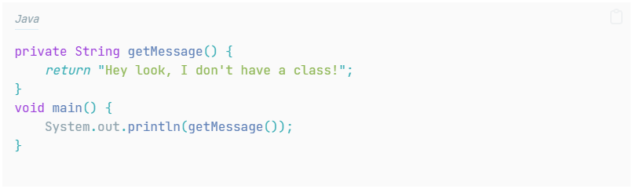
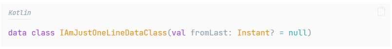
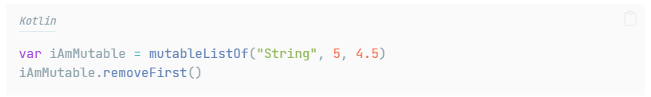
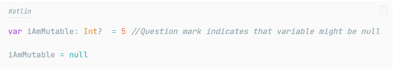
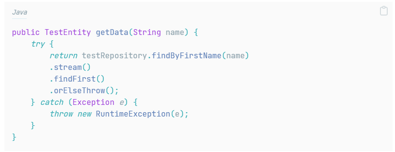

My new project in adesso Turkey uses Kotlin in some services. It is the first time that I am using Kotlin and not gonna lie, I liked it so far. It gives you the feeling that this language is modern and has nice approaches to some problems. And that got me thinking about these solutions, why Kotlin decided that and such. And interesting enough that Kotlin doesn’t use some features Java has eg. checked exceptions. So I decided to break down these features to understand the general mindset behind Kotlin (and also Java)
Both functional and OOP
One of the biggest advantages of Kotlin is that it can be used as both functional and object oriented. While that might raise a question to Java developers in that they are used to build a hierarchy no matter what they are writing, I think this flexible approach is better even for OOP approached apps. Why do we create a class for utilization methods anyway? Zipping everything inside a class, especially if you care about S (Single responsibility) from SOLID principle, results in lots of files, which make things harder to follow.
I am aware that Java 21 introduced unnamed classes for main methods. This also indicates that devs take into account the idea of functional programming, which is a good thing. I don’t want to consider Java as only “good for banking hehe” for the future where things change rapidly.

As little boilerplate code as possible
I am still not sure writing less code makes things faster nor makes code readable but it is at least fun to see that you could write data classes, functions, classes in a same file ( Kotlin suggests that) and it’s still not even a hundred line. Two questions arise now: How am I going to be sure this code is resilient and how do I fill one file with classes and methods and such? Answer to the first relies on Kotlin itself honestly, and you will not understand until you get your hands dirty. Google made Kotlin as main language and there are many mobile apps use it as backend solution already. So it seems like they achieved something here.
Second question is tricky though. I, as a Java Developer, am used to separate everything into files and it became a norm to me. Seeing a lot of things in one file made me confused at first. I can’t say I am fully used to now but separating two lines of a data class into a different file feels unnecessary at the moment.
On the other hand, I barely felt boilerplate code in Java made me slower. Sure, it might be a headache if you set up a new tech first time, but these are one-time thing. Also, IntelliJ and AI tools help a lot to configure them easily.

Kotlin urges you to use invariant types
From Java, I am so used to define a certain type even though the language supports var keyword for certain blocks like lambda. However, I like to define certain types and think it is more readable anda fail safe. Kotlin supports the same as well but it highly encourages you to use var and val keywords, which are mutable and immutable respectively.
While this approach has some benefits like using String and Int at the same time on a list, it still makes me look at the declaration twice to understand what is going on. I can understand that Kotlin wants to be as beginner-friendly as possible here as well but I think it shouldn’t force to use them.
Immutable and declarative null checks
This, right here, is a well-thought approach. Everything, by default, is immutable in Kotlin. You need to tell if you want mutable field, class whatever.
There are 3rd party libraries such as Immutables for Java just to make things immutable by default. Kotlin does that under the hood, just like null-safe. You need to declare fields explicitly that they can be null:

You don’t have to write or configure a lot of codes for these, which suit for what Kotlin wants to achieve. It also makes the code resilient and fail-safe. A lot of people forget to define final keyword in Java especially inside a method.

Kotlin doesn’t have checked exceptions
I know, I was shocked too when I first saw that. Like, how are you going to make sure that app won’t break itself for unexpected cases? Relying on developer’s knowledge might not be a good idea.
There are many different opinions about that actually. Like I mentioned above several times, Kotlin wants to be as small as possible in terms of number of lines and adding checked exception would destroy that mindset even though it allows you to use. And to be fair, checked exceptions don’t look good and break best practice rule most of the time. For example the code below does two things: Getting data and throwing a RunTimeException
You need to extract try-catch block into a different method in order to keep your code clean, which means ugly-looking several lines inside a class.

They don’t work well with inheritance and lambdas, either. So from Kotlin’s perspective, this approach makes a lot of sense. For Java as it always is considered as a stabil platform, I’m not so sure.
To Summarize
There are more differences such as coroutine, delegation, companion objects but overall, Kotlin uses advantages of being written in an environment where internet is what is now today. While it is very easy to write and more flexible than Java, it is still a use-case thing whether you want to go with Kotlin or Java.
Requirements are really different now and sticking to only Java, meaning being conservative does not fit with today’s fast changing world. You might need to use AOT compiler in some services, you might need to adapt your code to be able to work with mobile apps etc. etc. Kotlin comes with great solution and it’s worth putting it into your arsenal.